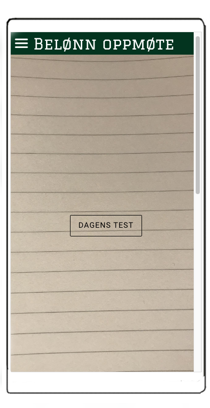

Fraværsdata og analyse: Appen registrerer oppmøte (enten på skolen eller på nett),
og på slutten av dagen gjennomføres en flervalgstest.

Dataene pr. elev kan distribueres til elevens foresatte,
mens de aggregerte dataene kan sendes skolen. På denne måten kan foresatte holde øye med sine barn,
skolene kan bruke analyse for å finne ut hvordan frafall skjer på et mer strukturelt nivå.
Det vil komme et varsel til den læreren som har ansvar for klassen om det er noen som begynner å nærme seg faresonen for å droppe ut.
Hvis noen havner i faresonen så vil rektor få en varsling om dette.
Skolen vil da enkelt kunne iverksette rette tiltak basert på disse opplysningene som appen kommer med.
Dataen som applikasjonen vil ta opp er :